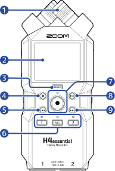
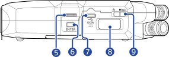
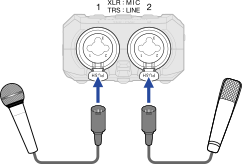
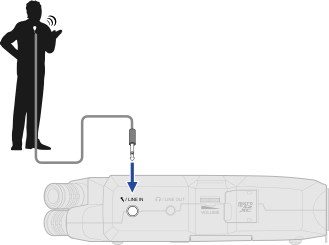
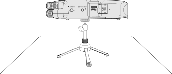
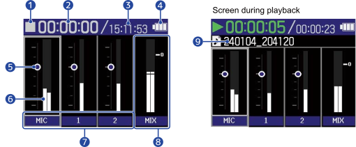
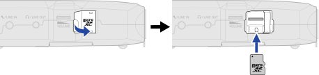
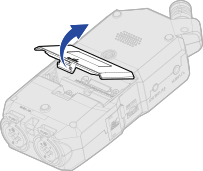
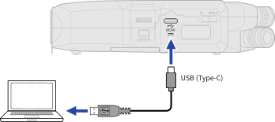

INPUT 1 可接 shotgun，INPUT 2 可接無線麥克風接收器。兩軌分開錄，後期剪接時比較好救、好平衡。
Film & TV use
你先抓住四件事
把這台新購器材用在拍片現場，先完成穩定接線、確認軌道、戴耳機監聽、完成可帶回後期的錄音檔。
帶出去錄 room tone、街景、空間感、現場 ambience，供後期補環境底噪。
你一定要戴耳機確認是否真的收到聲音。不要只看波形，也不要只相信接頭已經插上。
按 REC 後，看到 REC 燈亮、波形轉紅、錄音時間開始跑，才算真的開始錄音。
Recorder map
先認得孔位與按鍵
拿到機器後先繞一圈：底部 INPUT 1/2，側邊 MIC/LINE IN、PHONE/LINE OUT、VOLUME、microSD 與 USB Type-C。先分清楚收音輸入和耳機/線路輸出。

- 內建 XY 麥克風
- 螢幕
- MIXER 按鈕
- STOP 按鈕
- REW 按鈕
- 軌道鍵與狀態燈
- REC 按鈕與指示燈
- PLAY/PAUSE 按鈕
- FF 按鈕

Field workflow
拍攝現場的六步驟
每一次開錄前都照這個順序做。固定流程可以避免忘記開軌、沒插卡、沒監聽、錄完沒回放。
插入 microSD，確認剩餘時間關機狀態下插卡。第一次使用或從其他設備換過來時，先在 H4essential 內格式化。
準備電源可使用 2 顆 AA 電池，或用 USB Type-C 接 5V 供電。現場長時間拍攝建議用一般行動電源。
接上麥克風Shotgun 接 INPUT 1，無線接收器接 INPUT 2。3.5mm 小型無線系統可改接側邊 MIC/LINE IN。
開啟要錄的軌道按 MIC、1、2 的軌道鍵。要錄哪一路，那一路狀態燈要亮紅。
戴耳機監聽並調整平衡耳機接 PHONE/LINE OUT。側邊 VOLUME 控制耳機與輸出音量，多支麥克風音量差異可到 Mixer Screen 調整。
錄音、停止、立刻回放按 REC。確認紅燈亮、波形變紅、時間開始跑。停止後用 PLAY 回放。
Inputs
影視系最常用的三種使用情境
你可以把 H4essential 當成拍攝現場的小型分軌錄音機。先理解不同輸入代表不同拍攝任務，再去理解選單。
| 情境 | 接哪裡 | 你要怎麼用 | 注意事項 |
|---|---|---|---|
| Shotgun 麥克風 | INPUT 1，通常 XLR | 對準演員或訪談主體，盡量靠近聲源。 | 電容式 shotgun 需要供電時，才開該軌 Phantom +48V。 |
| 無線麥克風接收器 | INPUT 2 | 角色身上的 lav 收對白，適合和 shotgun 同時分軌。 | 先聽衣服摩擦、RF 雜訊、接收器電量。 |
| 內建 XY | 機身上方 MIC | 錄環境音、room tone、街景 ambience。 | 手持時不要摩擦機身。戶外要上防風罩。 |
| 3.5mm 小型系統 | 側邊 MIC/LINE IN | 可接小型無線、領夾麥或 RODE 類型 3.5mm 訊號。 | 使用 MIC/LINE IN 時，內建 XY 麥克風不能同時使用。 |



Track routing
檔案配置先看這兩件事
你在現場接 INPUT 1 和 INPUT 2 時，先決定它們要分開當兩支 mono 麥克風，或組成一組 stereo pair。這個設定會影響後期拿到的檔案形態。
Input Settings → INPUT 1 或 INPUT 2 → 1&2 Link → Stereo。開啟 Stereo 後，INPUT 1 會成為 Left，INPUT 2 會成為 Right。官方 Quick Tour 寫明，Stereo Link 後 Track 1/2 會錄成一個 stereo file。
若 INPUT 1 接 shotgun、INPUT 2 接無線 lav，要保留兩支麥克風的獨立後期處理空間，1&2 Link 請維持 Off。
官方手冊寫到：INPUT 1/2 Stereo Link 後，Lo Cut 會共用相同的截止頻率。調 80Hz、160Hz 或 240Hz 時，這組 stereo pair 會套用同一個低切設定。
新版 Firmware 的 Gain 要另外分清楚
H4essential 原始設計使用 32-bit float 與 Dual A/D Converter。Firmware 2.0 之後，官方補充手冊新增 Setting input gain，你可以在 Mixer Screen 針對每一軌調 Gain。
- 操作：Home Screen → 按 MIXER → 選軌道 → ENTER → 用轉盤調 Gain → ENTER。
- 快捷：Home Screen 長按要調整的軌道鍵，也可以進入該軌 Gain 調整。
- 錄 MP3 時，補充手冊提醒要讓波形保持在虛線範圍內，避免錄音檔 clipping。
Level concepts
你要分清楚四種音量概念
Firmware 2.0 後，多了每軌 Input Gain。你要把 Input Gain、Rec Source、Mixer Volume 與 Output level 分開看。
Firmware 2.0 之後可在 Mixer Screen 調整每一軌 Gain。
Rec Settings → Rec Source 可選 Pre Mixer 或 Post Mixer。
Mixer Volume 會影響耳機比例，也會影響混合 stereo 檔。
側邊 VOLUME 是 PHONE/LINE OUT 的監聽/輸出音量。

Power & media
電源、卡片、交檔
電源要穩，卡片要能錄，檔案要能交。Type-C 外接供電使用 5V，一般行動電源即可。



建議設定
- Sample Rate：影視課建議先用 48 kHz。
- Bit depth：H4essential 錄音為 32-bit float。後期容錯較高，前期仍然要戴耳機聽、開錄後檢查。
- 檔名：依日期與時間產生。請把場次、鏡號、take 與錄音時間記在場記表。
電源安全提醒
- Type-C 外接供電使用 5V。
- 輸出規格不確定的高功率充電器先不要接上機器。
- 若用 AA 電池拍 4 軌加耳機監聽，現場要準備備用電池或行動電源。
Student handout
錄音前後檢查表
每次作業都照著念一遍。你確認完這些項目，再按下 REC。
開錄前
- microSD 已插入，剩餘時間足夠。
- 電池或 5V Type-C 供電已確認。
- INPUT 1 接 shotgun，INPUT 2 接無線接收器。
- 要錄的 MIC、1、2 軌道燈亮紅。
- Phantom +48V 只開給需要的麥克風。
- 戴耳機確認每一路都有聲音。
- Mixer 裡每一路監聽平衡合理。
錄音中與收工
- REC 燈亮、波形紅、時間正在跑。
- 演員講話時耳機聽得到，波形也有反應。
- 聽到衣服摩擦、風聲、破音時立刻停下處理。
- 每個重要 take 後做短回放。
- 錄一段空場環境音供後期使用。
- 複製檔案到電腦後再退卡或關機。